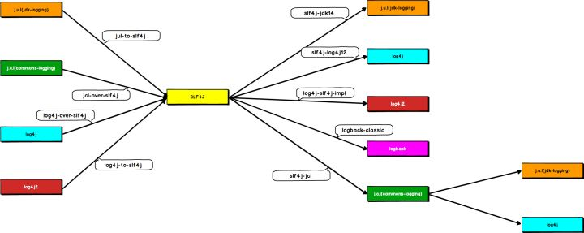

日志库
1. 日志库及其发展历史
我们可以对众多的日志相关Jar包进行分类，主要分为三类：
接口类：只提供 API 定义，没有提供具体实现。目的是为应用层提供标准化的使用方式。既所谓的面向接口编程。
- commons-logging（也称
J.C.L） - SLF4J
- commons-logging（也称
实现类：具体的日志实现类，提供对日志的收集/管理功能。受不同需求/不同历史环境影响，各框架功能上有许多不同。但遵循进化论规律。
- Log4j
- jdk-logging（也称，
J.U.L） - Logback
- Log4j2
桥接类：多种日志实现框架混用情况下，需要借助桥接类进行日志的转换，最后统一成一种进行输出。
- slf4j-jdk14
- slf4j-log4j12
- log4j-slf4j-impl
- logback-classic
- slf4j-jcl
- jul-to-slf4j
- log4j-over-slf4j
- icl-over-slf4j
- log4j-to-slf4j
整个 Java 日志库领域绕不开的人物是 Ceki Gülcü，大半个日志库领域都与他有关。
Java 1.4 之前 JDK 中并没有日志相关功能。Apache 基金会的 Log4j 是整个 Java 世界的唯一选择。Ceki Gülcü 是其作者。
2002 发布的 Java 1.4 自带了自己的日志库：jdk-logging，也称为
J.U.LLog4j 和 jdk-logging 两种日志库选择，导致了日志使用的混乱。所以 Apache 推出了commons-logging。它只是定义了一套日志接口，支持运行时动态加载日志组件。它的出现解决了多种日志框架共存的尴尬，也是面向接口编程思想的一种具体体现。
2006 年，Ceki Gülcü（Log4j 的作者）觉得 commons-logging 这套接口设计的不好，容易让开发者写出有性能问题的代码。他离开 Apache 后，又搞出来一套类似 commons-loggin 的接口类的日志库：Slf4j 。
在搞出来 Slf4j 之后，Ceki Gülcü 又顺带开发了 Logback，做为 Slf4j 的默认实现。在功能完整度和性能上，Logback 超越了当时所有已有的日志实现框架。
鉴于 logback 的更优秀的设计思路，Apache 基金会重写了 Log4j 库，推出其 2.0 版本。习惯性称为 Log4j2 。

2. Logback
pom.xml
<dependency>
<groupId>org.slf4j</groupId>
<artifactId>slf4j-api</artifactId>
<version>1.7.25</version>
</dependency>
<dependency>
<groupId>ch.qos.logback</groupId>
<artifactId>logback-core</artifactId>
<version>1.2.3</version>
</dependency>
<dependency>
<groupId>ch.qos.logback</groupId>
<artifactId>logback-classic</artifactId>
<version>1.2.3</version>
</dependency>
<!-- 由于 logback-classic 依赖于 slf4j-api 和 logback-core，因此 slf4j-api 和 logback-core 的 dependency 可以省略掉 -->
使用 logback 需要在 classpath 下提供一个 logback.xml 配置文件。
该文件最精简的基本格式如下：
<?xml version="1.0" encoding="UTF-8"?>
<configuration debug="false">
<appender name="CONSOLE" class="ch.qos.logback.core.ConsoleAppender">
<encoder>
<pattern>%5p | %-40.40logger{39} : %m%n</pattern>
<charset>utf8</charset>
</encoder>
</appender>
<logger name="包名" level="DEBUG" additivity="false">
<appender-ref ref="CONSOLE"/>
</logger>
<root level="WARN">
<appender-ref ref="CONSOLE" />
</root>
</configuration>
2.1. Logback 的基本配置说明
<configuration debug="false">
logback 日志库本身也能输出关于它自身的日志信息。debug="false" 表示关闭 logback 自身的 debug 日志信息的输出。
<appender name="CONSOLE" class="ch.qos.logback.core.ConsoleAppender">
<encoder>
<pattern>...</pattern>
<charset>utf8</charset>
</encoder>
</appender>
这一段 appender 的配置表示这一个日志输出『目的地』为终端控制台的配置。name="xxx" 命名任意，可自定义。class="ch.qos.xxx..." 是『固定』写法。logback 就是靠这里配置的这个类，将日志输出到终端控制台。
<pattern>...</pattern> 中写入的是日志格式配置。例如：
<pattern>%d{yyyy-MM-dd HH:mm:ss} %5p ---- %-40.40logger{39} : %m%n</pattern>
logback 采用类似 C 语言中的 printf 函数的打印格式格式化日志信息。
基本的打印参数有：
| 占位符 | 说明 |
|---|---|
%d or %date |
日志生产时间 |
%d{yyyy-MM-dd HH:mm:ss} 2012-11-02 14:34:02 |
|
%d{yyyy-MM-dd HH:mm:ss,SSS} 2012-11-02 14:34:02,123 |
|
%t or %thread |
输出当前线程名称 |
%p or %level |
输出日志级别，-5 表示左对齐并且固定输出 5 个字符，如果不足在右边补空格 |
%logger |
输出 logger 的名称。这个名称就是创建 Logger 对象时所传入的字符串，通常就是类的完全限定名 |
%logger{15} 完全限定名超过 15 个字符，开始将包名缩写成单个字母。最右边的部分永远不会被简写 |
|
%20.20logger 至少占 20 个字符（多的补空格），右对齐。超过 20 个字符开始从左侧缩写 |
|
%-20.20logger 至少占 20 个字符（多的补空格），左对齐。超过 20 个字符开始从左侧缩写 |
|
%10.-10logger 至少占 10 个字符（多的补空格），左对齐。超过 20 个字符开始从右侧缩写 |
|
%m or %msg |
输出日志的内容 |
%n |
换行符 |
这里是一段『配置』，后续会引用这一段配置。
<root level="WARN">
<appender-ref ref="CONSOLE" />
</root>
这一段是在设置日志级别及其日志输出。除了 <logger> 元素『额外』指定的包之外，其它的包都遵守此处的配置。相等于就是『默认』的日志输出。
level="xxx" 表示日志输出级别，志信息的优先级从高到低有 ERROR、WARN、INFO、DEBUG，分别用来指定这条日志信息的重要程度。
<appender-ref ref="CONSOLE" /> 表示引用一个名为 CONSOLE 的 <appendder> 配置。这个配置决定了日志信息以什么样的格式输出，输出到哪里。
<logger name="包名" level="DEBUG" additivity="false">
<appender-ref ref="CONSOLE"/>
</logger>
<logger> 表示一个明确的单独的日志设置。用于专门指定某个包中的日志的输出。如果一个包及符合 <logger> 的设置，又因为它要准守默认的 <root> 的设置，所以使用 additivity="false" 表示它只用遵守 <logger> 的设置，<root> 的设置不起作用。
3. 一个更复杂的样例
<?xml version="1.0" encoding="UTF-8"?>
<configuration debug="false">
<property name="LOG_PATH" value="${catalina.base}/logs/webapps"/>
<property name="LOG_FILE" value="${LOG_PATH}/spring.log"/>
<appender name="CONSOLE" class="ch.qos.logback.core.ConsoleAppender">
<encoder>
<pattern>%d{yyyy-MM-dd HH:mm:ss} %5p | %-40.40logger{39} : %m%n</pattern>
<charset>utf8</charset>
</encoder>
</appender>
<appender name="FILE" class="ch.qos.logback.core.rolling.RollingFileAppender">
<encoder>
<pattern>%d{yyyy-MM-dd HH:mm:ss.SSS} %5p | [%15.15t] %-40.40logger{39} : %m%n</pattern>
<charset>utf8</charset>
</encoder>
<file>${LOG_FILE}</file>
<rollingPolicy class="ch.qos.logback.core.rolling.SizeAndTimeBasedRollingPolicy">
<fileNamePattern>${LOG_FILE}.%d{yyyy-MM-dd}.%i.gz</fileNamePattern>
<maxFileSize>10MB</maxFileSize>
<maxHistory>0</maxHistory>
</rollingPolicy>
</appender>
<!-- 指定类与<looger>的关联关系 -->
<logger name="com.oracle" level="DEBUG" additivity="false">
<appender-ref ref="CONSOLE"/>
<appender-ref ref="FILE" />
</logger>
<root level="INFO">
<appender-ref ref="CONSOLE" />
<appender-ref ref="FILE" />
</root>
</configuration>
4. SLF4j
slf4j 是 commons-logging 的替代者。它们的目的都是一样的：希望用户调用它的方法，而它再去调用某个具体的日志库。从而实现日志代码的统一。即，直接使用 slf4j，间接使用 logback 或 slf4j2 。
在 SLF4J 中获得 Logger 对象的方式是：
LoggerFactory.getLogger()
通过指定的名字获得记录器，如果必要的话，则为这个名字创建一个新的记录器。Name 一般取本类的名字，比如：
static Logger logger = LoggerFactory.getLogger(ServerWithLog4j.class);
SLF4J 一个非常好的功能是，它提供了占位符（使用{}）的概念，以方便与在输出信息中“插入”数据。
logger.info("Hello {} World {}", 100, "Goodbye");
另外，如果通过 slf4j 打印异常的堆栈信息，异常的堆栈信息不需要一个 {} ：
logger.error("错误消息：{}", e.getMessage(), e); // 注意，这里只需要有一个 {}
5. 如何正确打印日志
5.1. 使用 slf4j
- 使用门面模式的日志框架，有利于维护和各个类的日志处理方式统一。
- 实现方式统一使用: Log4j2 或 Logback 框架
5.2. 打日志的正确方式
5.2.1. 什么时候应该打日志
- 当你遇到问题的时候，只能通过 debug 功能来确定问题，你应该考虑打日志，良好的系统，是可以通过日志进行问题定为的。
- 当你碰到
if ... else ...或者switch这样的分支时，要在分支的首行打印日志，用来确定进入了哪个分支 - 经常以功能为核心进行开发，你应该在提交代码前，可以确定通过日志可以看到整个流程
5.2.2. 日志的基本格式
必须使用参数化信息的方式:
logger.debug("Processing trade with id: {} and symbol: {} ", id, symbol);
不要进行字符串拼接，那样会产生很多 String 对象，占用空间，影响性能。
反例 / 不要这么做：
logger.debug("Processing trade with id: " + id + " symbol: " + symbol);
5.2.3. 使用 [] 进行参数变量隔离
如有参数变量，应该写成如下写法:
logger.debug("Processing trade with id: [{}] and symbol: [{}] ", id, symbol);
这样的格式写法，可读性更好，对于排查问题更有帮助。
5.3. 不同级别的日志的使用
5.3.1. ERROR 级别日志
使用 ERROR 的场景：影响到程序正常运行、当前请求正常运行的异常情况
- 打开配置文件失败
- 所有第三方对接的异常(包括第三方返回错误码)
- 所有影响功能使用的异常，包括：SQLException 和除了业务异常之外的所有异常（RuntimeException 和 Exception）
另外，如果有 Throwable 信息，需要记录完成的堆栈信息:
log.error("获取用户[{}]的用户信息时出错", userName, e);
但是，如果进行了抛出异常操作，请不要记录 error 日志，由最终处理方进行处理：
反例 / 不要这么做：
try {
....
} catch (Exception e) {
logger.error(...);
throw new UserServiceException(errorMessage, ex);
}
5.3.2. WARN 级别日志
使用在不应该出现但是不影响 程序/当前请求 正常运行的异常情况:
- 有容错机制的时候出现的错误情况
- 找不到配置文件，但是系统能自动创建配置文件
- 即将接近临界值的时候
- 业务异常的记录
5.3.3. INFO 级别日志
场景一：用于记录系统运行信息：
- Service 方法中对于 系统/业务 状态的变更
- 主要逻辑中的分步骤
需要说明的是：并不是所有的 service 都进行出入口打点记录，单一、简单 service 是没有意义的（job 除外，job 需要记录开始和结束）。
反例 / 不要这么做：
public List listByBaseType(Integer baseTypeId) {
log.info("开始查询xxx");
...
...
...
...
log.info("查询xxx结束");
return ...;
}
场景二：用于外部接口部分：
- 客户端请求参数（REST/WS）
- 调用第三方时的调用参数和调用结果
需要说明的是：
- 对于整个系统的提供出的接口（REST/WS），使用 info 记录入参；
- 调用其他第三方服务时，所有的出参和入参是必须要记录的（因为你很难追溯第三方模块发生的问题）
5.3.4. DEBUG 级别日志
- 可以填写所有的想知道的相关信息（但不代表可以随便写，debug 信息要有意义,最好有相关参数）
- 生产环境需要关闭 DEBUG 信息
- 如果在生产情况下需要开启 DEBUG，需要使用开关进行管理，不能一直开启。
5.3.5. TRACE 级别日志
特别详细的系统运行完成信息，业务代码中，不要使用。（除非有特殊用意，否则请使用 DEBUG 级别替代）
5.4. 规范示例说明
@Override
@Transactional
public void createUserAndBindMobile(String mobile, User user) throws CreateConflictException {
boolean debug = log.isDebugEnabled();
if (debug) {
log.debug("开始创建用户并绑定手机号. args[mobile=[{}],user=[{}]]", mobile, LogObjects.toString(user));
}
try {
user.setCreateTime(new Date());
user.setUpdateTime(new Date());
userRepository.insertSelective(user);
if (debug) {
log.debug("创建用户信息成功. insertedUser=[{}]",LogObjects.toString(user));
}
UserMobileRelationship relationship = new UserMobileRelationship();
relationship.setMobile(mobile);
relationship.setOpenId(user.getOpenId());
relationship.setCreateTime(new Date());
relationship.setUpdateTime(new Date());
userMobileRelationshipRepository.insertOnDuplicateKey(relationship);
if (debug) {
log.debug("绑定手机成功. relationship=[{}]",LogObjects.toString(relationship));
}
log.info("创建用户并绑定手机号. userId=[{}],openId=[{}],mobile=[{}]",user.getId(),user.getOpenId(),mobile); // 如果考虑安全，手机号记得脱敏
} catch(DuplicateKeyException e) {
log.info("创建用户并绑定手机号失败,已存在相同的用户. openId=[{}],mobile=[{}]",user.getOpenId(),mobile);
throw new CreateConflictException("创建用户发生冲突, openid=[%s]",user.getOpenId());
}
}